活動素材製作工具 - MS編輯器/BN編輯器
活動素材編輯器可一站完成一檔活動所需的美術素材，系統能預先排除常見法務與客訴疑慮問題、提供多款視覺背景模板挑選。
製作內容
一檔活動分成兩大塊製作：
曝光資源：投放到各處的廣告 Banner。
曝光資源（DD Card、HBN、IG 等套用同一套視覺）
LOGO副標最多7個字主標最多8個字活動日期
商品／人物圖區
CTA ▸
HBN
LPBN
DD Card
IG
FB_POST
Coin_pageBN
SCBN
AMS
SBA
活動總覽
活動頁：點擊後進入的活動頁面。
活動頁（副區、MSBN、吸底）
副區副區副區
系統區塊
MSBN
MSBN
系統區塊
吸底
副區
MSBN
吸底
製作流程
系統會引導您依照以下流程完成製作，避免活動素材缺漏。
- 新手導覽：第一次開啟自動播放；重看請按左下「教學」→「導覽」。
- 清除重置：清空全部暫存，無法復原，請先整包下載備份。
一、首頁
操作說明
1上傳工單
- 拖進「工單匯入」虛線框，或點擊選檔（
.xlsx／暫存檔.json）
工單總覽Layout_Output
工單總覽分頁帶入曝光資源Layout_Output分頁帶入活動頁（工單公版）- ※ 活動頁內容必須從工單匯入，未匯入無法製作
- 工單匯入會自動帶入活動等級名稱
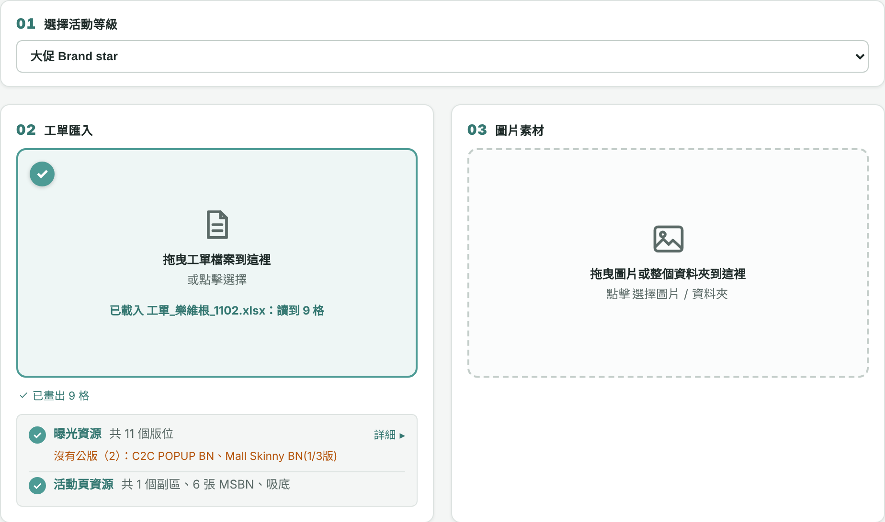
2上傳素材
- 支援拖曳整個資料夾，或點選圖片等上傳方式
- 工單中若有附上素材檔名，檔名與素材名稱自動配對，並顯示結果
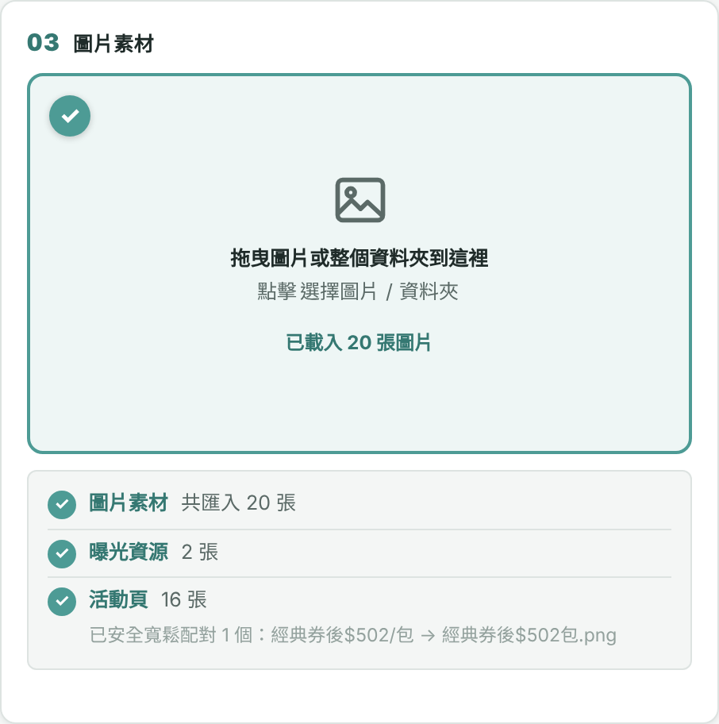
3開啟活動等級對應能製作的版位
- 活動等級決定可製作的項目（見下表），也可手動選擇
- 「BOD資交」若有廠商自製 MS，系統會主動確認，在提示框確認即可開啟活動頁
| 等級 | 曝光資源 | 活動頁 | 活動頁面配色 | 吸底 |
|---|---|---|---|---|
| 大促 Brand star | ○ | ○ | ○ | ○ |
| 大促 Brand star 資交 | ○ | ○ | ○ | ○ |
| AD單買(多店活動) | ○ | ○ | ○ | ○ |
| AD單買(BN Only) | ○ | × | × | × |
| A BOD+ | ○ | ○ | ○ | ○ |
| A BOD | ○ | ○ | ○ | ○ |
| A BOD+(資交) | ○ | △ | △ | △ |
| A BOD(資交) | ○ | △ | △ | △ |
| B級 JBP(多店活動) | ○ | ○ | ○ | ○ |
○ 開啟 × 不開啟 △ 依廠商自製需求開啟
4按「開始編輯」
- 左側步驟解鎖，依序製作
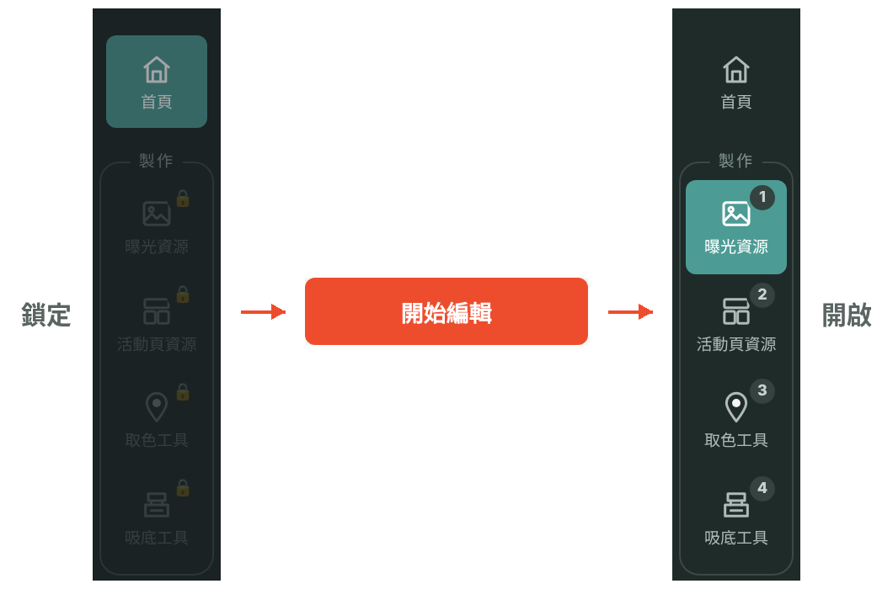
功能介紹
- 自動配對素材，免逐一上傳：工單填寫的檔名，匯入圖片時自動對應到欄位；框下方顯示配對數量與找不到的檔名。
- 檔名寫法略有差異也能配對：忽略大小寫、全半形、空白、底線、連字號及 / \ : * ? " < > |。
- 整包資料夾直接上傳：資料夾內第 2、3 層的圖片也會讀取。
- 隨時接續上次進度：上傳之前下載的暫存檔
.json即可繼續編輯。
二、曝光資源
中間是版位預覽，右側是工具列。
操作說明
1確認製作的版位
- 匯入工單時已按照活動等級自動勾選
2輸入文字內容
- 可由右側欄位或畫布中的文字框直接編輯
- 所有版位同步套用
- 文案若不需加 $ 符號，可在畫布上反白數字，點選「暫時不加$和千分位符號」取消
優蛋白1包$502
3上傳 LOGO
- 最多 3 張
- 所有版位同步套用
4上傳素材（商品圖、人物素材）
- 商品圖與人物素材需分開上傳：商品按「＋ 點擊上傳商品圖」；人物按「＋ 點擊上傳代言人」「＋ 點擊上傳簽名檔」
- 商品圖最多 3 張，代言人算 2 品
- 工單有填會自動帶入
- 所有版位同步套用
5選背景圖
- 開啟背景圖庫，點選即所有版位套用
- 支援上傳其他背景素材
6商品與視覺排版
- 點選商品：拖曳移動、拖四角縮放、拖把手旋轉
- 滑到版位上可調整背景圖
- 調好 HBN 與 LPBN，其他版位會自動跟隨
7逐張檢查版位
- 特殊版位（如 SCBN）先點標頭右上「版位連動」切成「獨立編輯」再微調
8按「曝光資源完成」
- 左側打勾，進入活動頁
功能介紹
- 超出字數即時提醒：文字超出字數會出現紅框，須先處理才能下載。
- 依工單自動勾選版位：依工單總覽「版位」欄（黃底列）自動勾選；等級表沒有的版位會在首頁提示「沒有公版」。
- 商品自動加影子，畫面更立體：上傳時自動加上，可調開關、光源、位移、寬度與長度。
- 自動分辨代言人照與簽名檔：檔名含「簽名／sign」視為簽名檔，含「代言／照／photo」視為代言人照；判斷錯誤時按「⇄」互換。
- 品數自動控管，不會超規：代言人照算 1 品，與商品合計最多 3 品；簽名檔、小字不佔品數。
- 小字字級自動符合規範：最多 10 字（2 排 × 5 字），字級固定；字色依底色自動黑／白，也可手動指定。
- 調好兩張，全版位自動排好：只需調整 HBN 與 LPBN，其他版位自動跟隨；人像不會被裁切，並自動避開文字與 Logo。
跟隨 版位 HBN HBN（橫式／方式）、活動總覽、AMS、SCBN、SBA_PC LPBN LPBN_APP、LPBN_PC、FB_POST、ddcard、IG、Coin_pageBN、SBA_APP 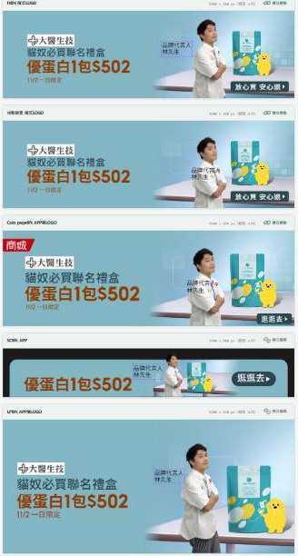
- 特殊版位可單獨微調：點版位標頭右上按鈕切換；獨立編輯的版位不受其他版位影響。
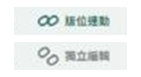
上：版位連動。下：獨立編輯。 - 避免排好的版位被覆蓋：修改已完成的版位時，可選「僅套用至未完成版位」（建議）、「解除所有連動」或「確定全部覆蓋」。
三、活動頁
中間是匯入預覽，右側是工具列。
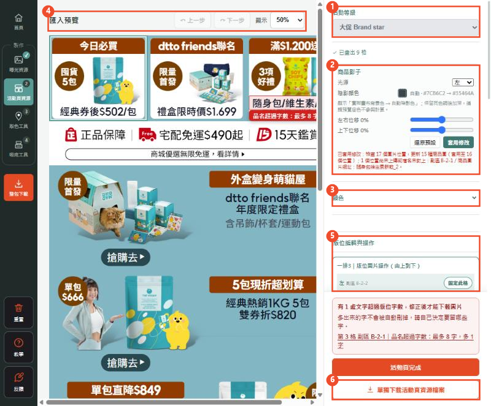
操作說明
1檢查成品預覽
- 上方可調顯示比例 50%～100%
2點選要修改的版位
- 點一下即鎖定，右側顯示編輯項目
- 按「已鎖定｜解除」恢復自動跟隨
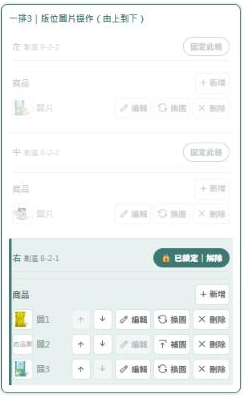
3編輯素材
- 右側可新增、編輯、換圖、補圖、刪除
- ↑↓ 調整前後順序
- 畫布上可直接拖曳、縮放
4上傳簽名檔
- 在指定欄位按「補圖」
- 上傳後自動開啟代言人文案輸入框
5調整商品影子
- 光源：左／中／右／關閉
- 可調顏色、位移，按「套用修改」
6按「活動頁完成」
- 左側打勾，進入活動頁面配色
- 右下出現紅色提醒（如字數超過）須先修正
功能介紹
- 版位數量自動產生：自動決定三大保障、副區、MSBN 的數量。
- 配色與曝光資源自動一致：背景色與 CTA 跟隨曝光資源；圓標、促標可在活動頁單獨調整。
- CTA 自動維持清楚可讀：曝光資源 CTA 為白色時，活動頁自動改用可辨識的顏色。
- 圓標自動避開撞色：與促標同色系、不與 CTA 同色。
- 沒有文案自動隱藏圓標：圓標無文案時底色自動隱藏，按「＋」可加回。
- 改錯可隨時復原：↶ ↷ 或 Ctrl Z／Ctrl Shift Z。
四、活動頁面配色
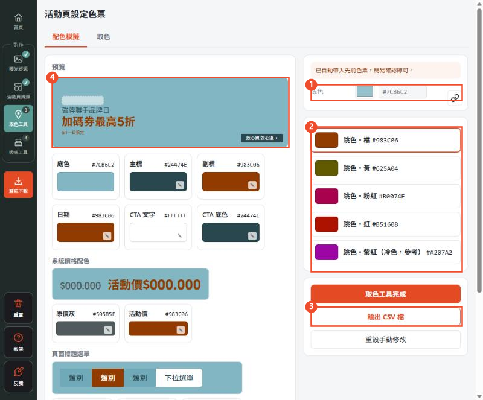
操作說明
1確認底色
- 連結圖示亮起＝與曝光資源連動
2選擇跳色
- 點右側候選色即套用
3檢查預覽色票
- 點色票上的筆可手動改色
- 「重設手動修改」可還原
4按「取色工具完成」
- 進入吸底
功能介紹
- 色票自動算好，簡單確認即可：依前面設計的配色，自動算出主標、副標、日期、CTA 與價格顏色。
- 自動檢查文字對比度：「取色」分頁可載入 hbn 資料夾或拖入圖片，自動偵測底色、主標、副標、CTA 並標示對比度。
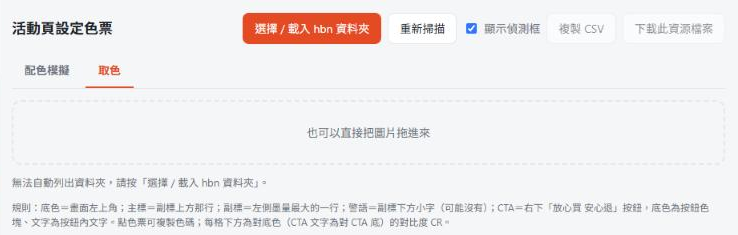
- 一鍵輸出色票檔：下載色票 CSV，格式對應色票.xlsx。
- 改色一次，全部同步：換色時只確認一次，曝光資源與活動頁同步修改，並改回未完成。
- 內建配色原則，避免配錯色：全頁四色（底、深、強調、白）；淺底配深字，深底配白主標＋淺黃／米色副標；CTA 用白字。
五、吸底
頁面底部 1200 × 150 的促銷橫幅。
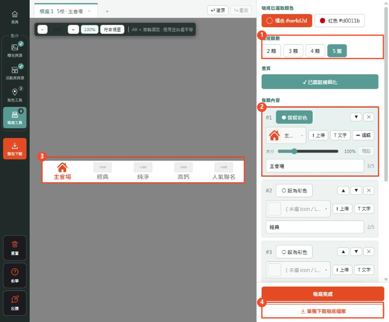
操作說明
1選擇顆數
- 2～5 顆
- 反白顏色可選橘或紅
2設定每顆 icon 與文字
- icon 可搜尋，或上傳自訂 icon
- 大小可調 50%～250%
- 文字建議 5 字內
3檢查預覽
- 可新增分頁、復原／重做
4按「吸底完成」
- 系統會詢問是否整包下載
功能介紹
- 工單內容自動帶入：工單內的 LOGO、ICON、文案自動帶入。
- 多狀態圖一次出齊：匯出時每張反白一顆、其他轉灰，一次出齊。
- 超出範圍即時提醒：圖片過大、壓字或超出邊界時顯示紅字（不影響匯出，但請檢查）。
六、下載
操作說明
1按「整包下載」
- 有步驟未完成會先提醒
2逐張檢查圖片
- 切換「全部／活動頁／曝光資源」
- 點圖片可放大
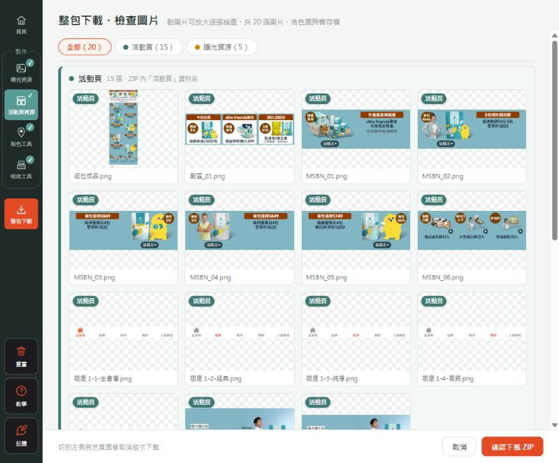
3按「確認下載 ZIP」
- 打包時請勿關閉分頁或切換頁面
功能介紹
- 一次打包所有交付檔：回填文案的 Excel、全部圖片（曝光資源、活動頁、吸底）、色票、暫存
.json。 - 也能單獨下載單頁：各頁下方可單獨下載該頁檔案。
- 下載前自動把關：字數超過或提醒未確認時，會擋下下載並跳到該頁。
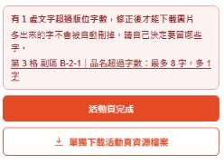
- 自動暫存，不怕內容遺失：編輯內容存在這台電腦的瀏覽器，重新整理會還原；換電腦請用
.json暫存檔。